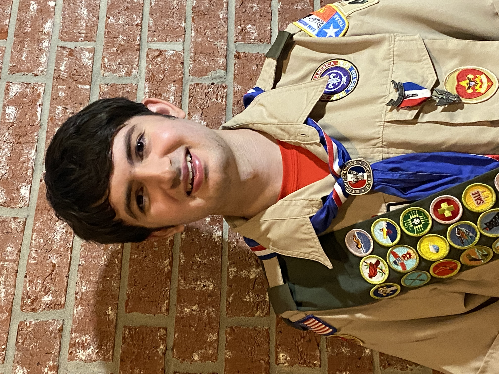
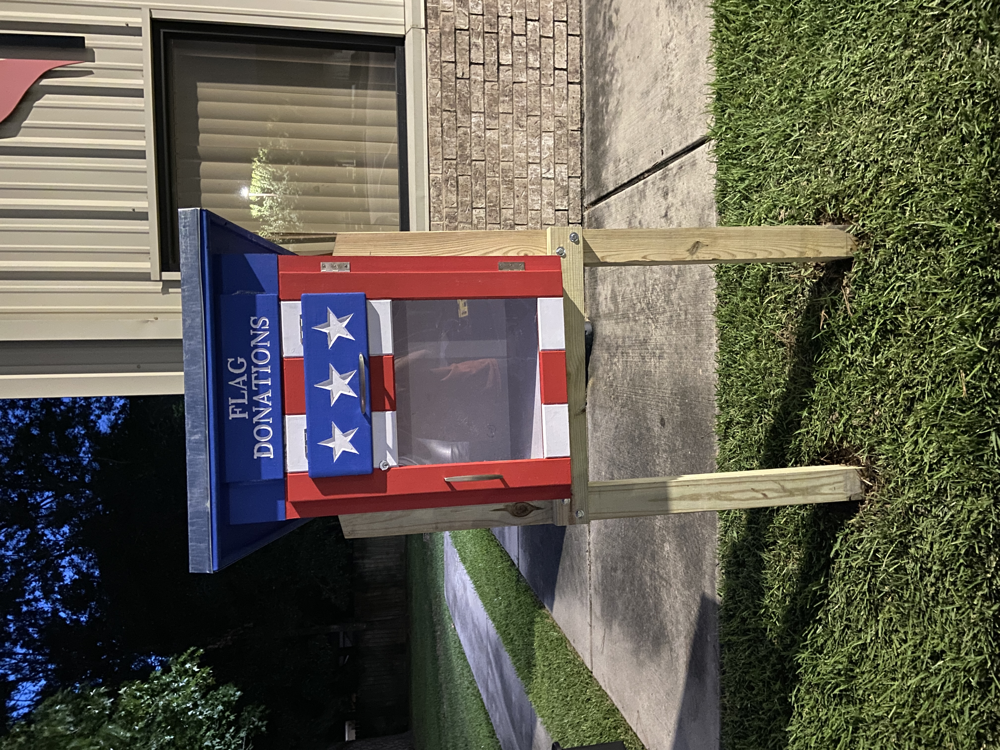

Ian was involved with the Boy Scouts through Troop 469 from his childhood until he aged out of the program at 18 years of age. Throughout his time in the program he commited countless hours of cheerful service for the community and contributed to his troop as Assistant Senior Patrol Leader, the second highest youth position in a troop. He attained the rank of Eagle after completing his project, wherein he donated a box for the respectful disposal of American flags to a local church and its community. Throughout his time as an Assistant Senior Patrol Leader, he was put in charge of entire campouts and other activities, which he governed cheerfully, acting as a servant leader. He implemented minor reforms throughout troop operations where he saw fit (and had the authority), improving the quality of these operations. While he often disagreed with the choices of adult leaders, and made this clear where it overlapped with his elected command, he always gracefully accepted the decisions and experience of those to him wiser. Upon recieving the rank of Eagle, he expressed his excitement over computer science and was given the advice, "love what you do and you'll never work a day in your life," an adonage which he holds close to his heart as he faces the challenges of A&M's engineering program.

Outside of the scouts, Ian served as the head of the programming team for his highschool robotics team and helped to teach younger members the principles of programming and software engineering and managed the team to complete the project on time. He also helped out at a daycare operated by his family by helping watch children and contributing to community events.
Ian hopes to someday return to the programs which shaped his growth by contributing to the journeys of other young scouts and those in engineering programs at the highschool level. He hopes that someday he might live up to the level of respectable professionalism and wisdom which those he learned from demonstrated in charity, integrity, faith, honesty, and pure dedication to both work and grand principle.